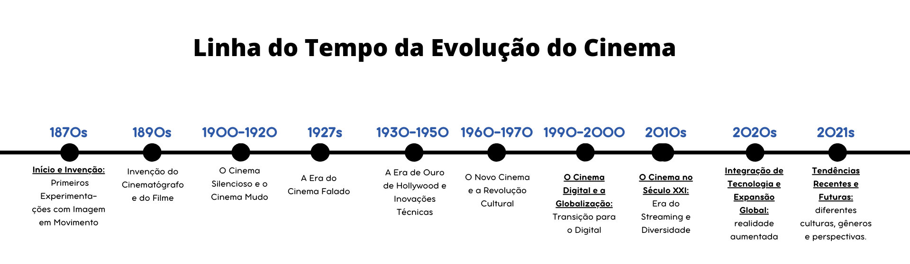

A evolução do cinema reflete uma contínua inovação tecnológica e uma crescente diversidade de narrativas e estilos. Desde os primeiros experimentos com imagens em movimento até a era digital e globalizada atual, o cinema tem se adaptado e se transformado, mantendo-se uma forma vibrante e relevante de expressão artística e entretenimento.
Nos últimos anos, o cinema e as séries têm transcendido barreiras culturais e geográficas, permitindo que produções de diferentes partes do mundo alcancem audiências globais. Essa transformação é impulsionada pelo crescimento das plataformas de streaming, a globalização da mídia e o aumento do interesse por histórias e perspectivas diversificadas.
Plataformas de Streaming: as plataformas de streaming, como Netflix, Amazon Prime Video e Disney+, desempenham um papel crucial na globalização do entretenimento. Elas oferecem acesso a um catálogo internacional de filmes e séries, permitindo que produções de diversos países alcancem audiências além das fronteiras nacionais. Isso tem possibilitado a popularização de conteúdos que anteriormente não teriam visibilidade global.
Acessibilidade e Localização: além de fornecer conteúdo internacional, essas plataformas investem em legendagem e dublagem em vários idiomas, tornando os filmes e séries mais acessíveis para públicos que não falam o idioma original. A localização vai além da tradução, envolvendo adaptações culturais e regionais para garantir que o conteúdo ressoe com diferentes audiências.

-"Round 6" (2021) A série sul-coreana "Round 6" (Squid Game) se tornou um fenômeno global, atraindo uma enorme audiência em todo o mundo. A série, que explora questões sociais e econômicas através de um jogo mortal, ganhou popularidade devido à sua trama envolvente e à capacidade de tocar em temas universais, independentemente da barreira linguística.
-"Cidade de Deus" (2002) O filme brasileiro "Cidade de Deus", dirigido por Fernando Meirelles e Kátia Lund, é um exemplo de sucesso internacional do cinema latino-americano. Retratando a vida nas favelas do Rio de Janeiro, "Cidade de Deus" recebeu aclamação crítica e internacional, sendo indicado a quatro Oscars e apresentando a realidade brasileira a uma audiência global.
-“La casa de Papel” (2027) La Casa de Papel é uma série de televisão de drama policial espanhola criada por Álex Pina. A trama traça dois assaltos muito preparados liderados por um homem conhecido como O Professor (Álvaro Morte), um na Casa da Moeda Real da Espanha e outro no Banco Central da Espanha.
Ampliação de Perspectivas: a diversidade no cinema e na televisão permite a exploração de uma ampla gama de histórias e perspectivas. Filmes e séries que representam diferentes culturas e experiências ajudam a promover empatia e compreensão entre os públicos, além de desafiar estereótipos e preconceitos.
Talentos e Narrativas: a crescente inclusão de talentos de diferentes origens culturais também tem enriquecido a indústria do entretenimento com novas narrativas e estilos de storytelling. Isso abre portas para roteiristas, diretores e atores de todo o mundo, permitindo que eles compartilhem suas histórias de uma maneira mais ampla.
Barreiras Linguísticas e Culturais: embora o acesso global ao conteúdo tenha aumentado, ainda existem desafios relacionados às barreiras linguísticas e culturais. O sucesso de produções internacionais depende em grande parte de como elas são traduzidas e adaptadas para diferentes audiências.
Sustentabilidade do Mercado: outro desafio é garantir que o mercado internacional continue a sustentar a produção e distribuição de filmes e séries de diferentes regiões. As plataformas de streaming e os estúdios precisam equilibrar a oferta de conteúdo global com a demanda local para manter a diversidade no mercado.